BASKO CLEAN
I designed and built the website for an industrial cleaning company from Szczecin, and I keep it up to date. I also created its visual system and a motion-graphic ad for Instagram.
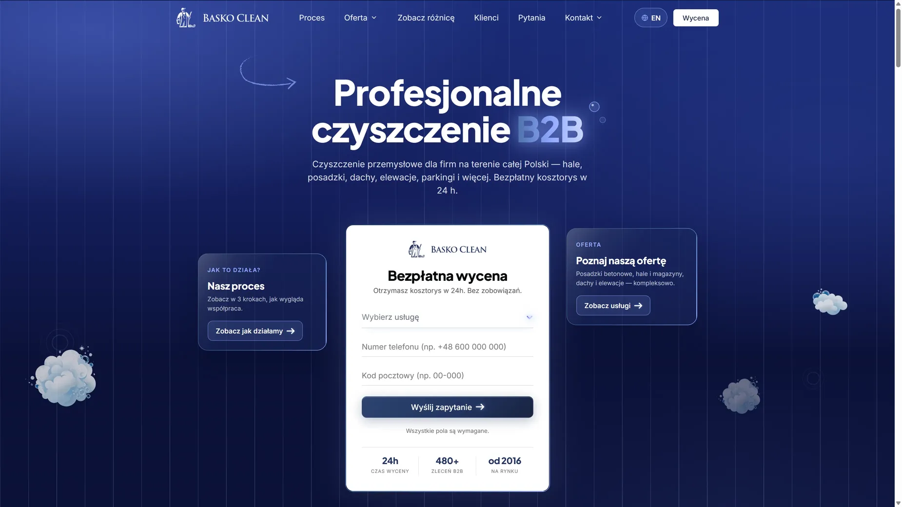
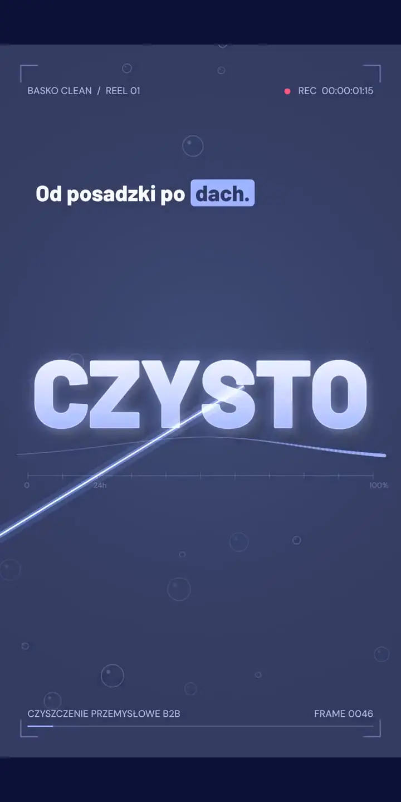
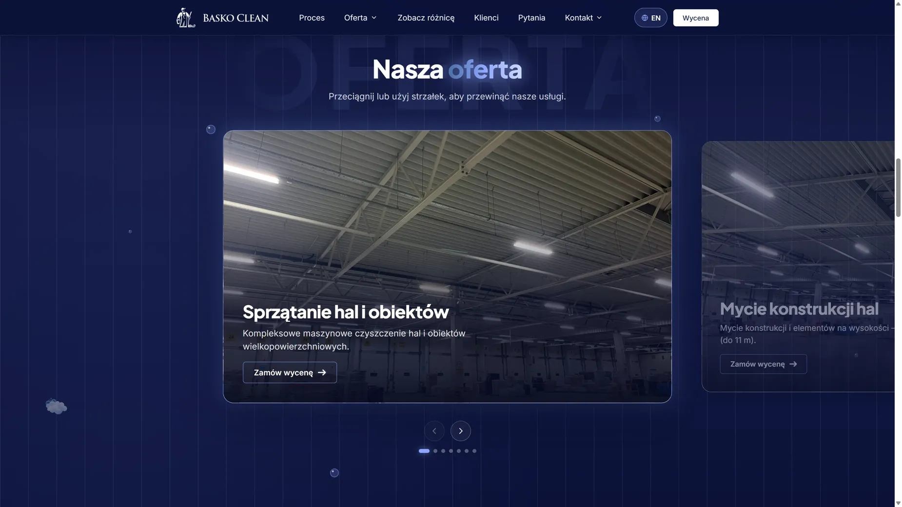
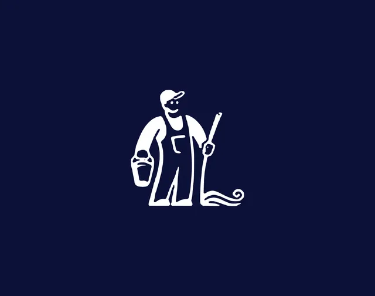
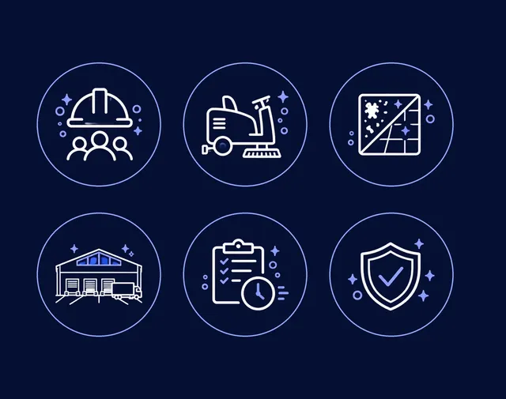
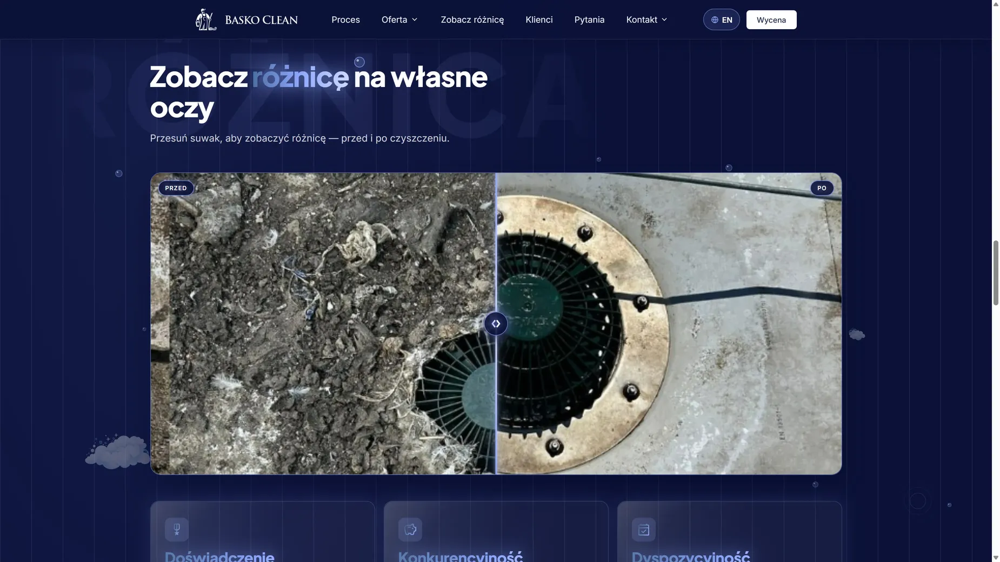
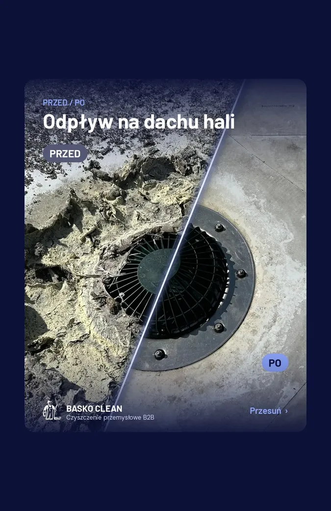
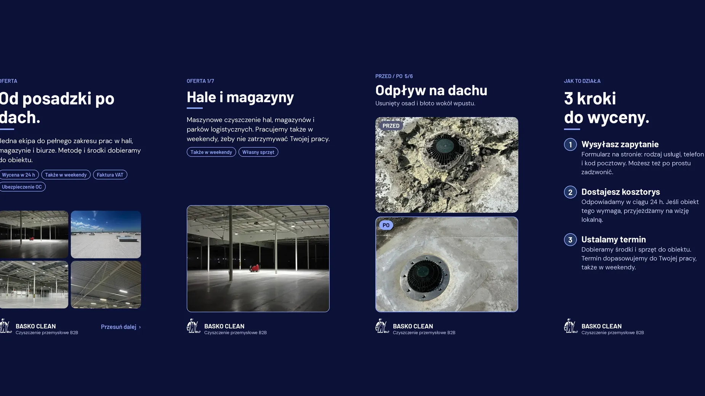
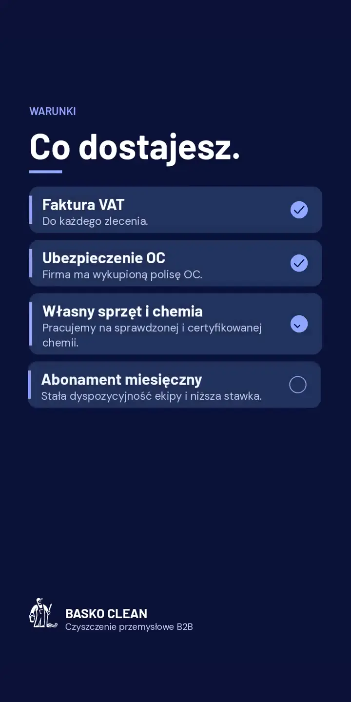
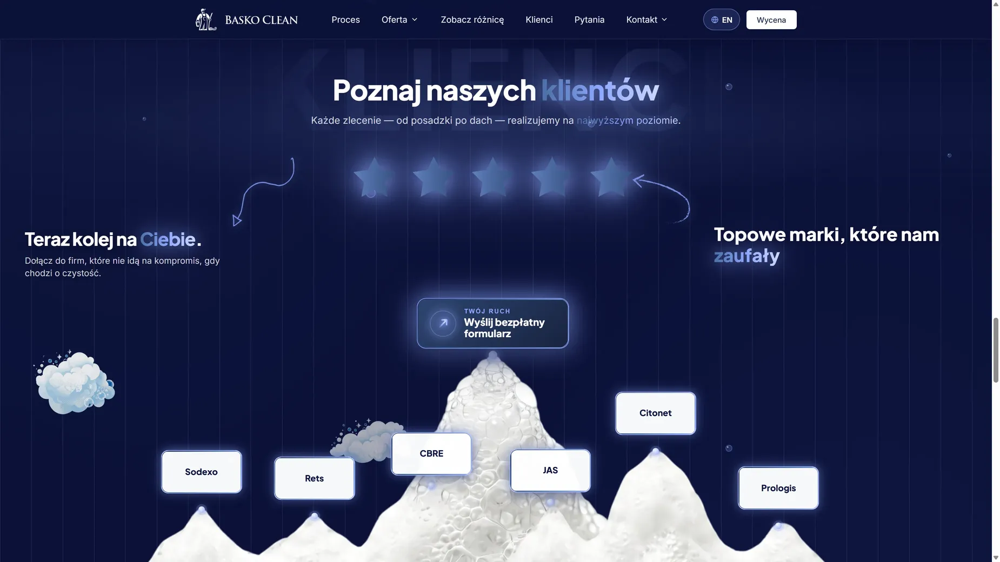
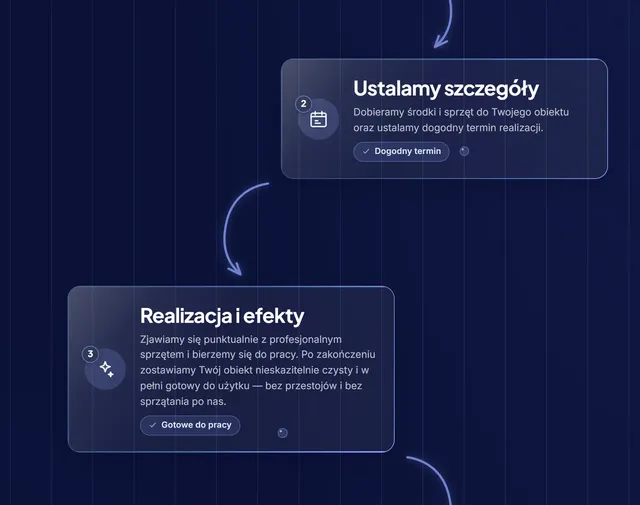
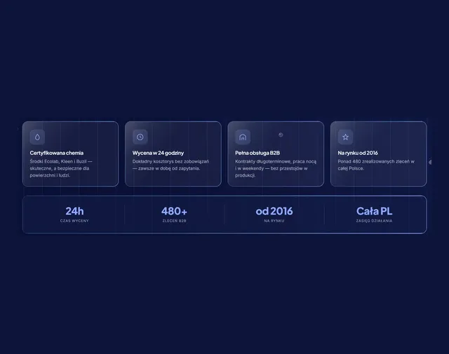
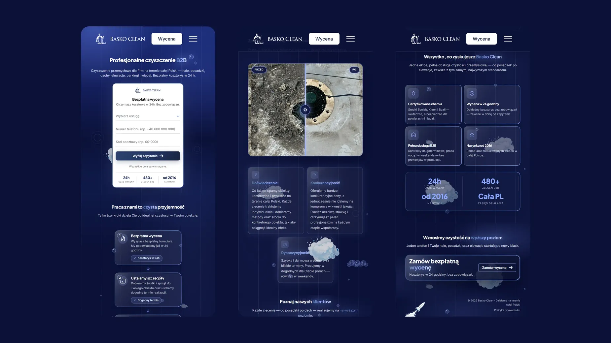
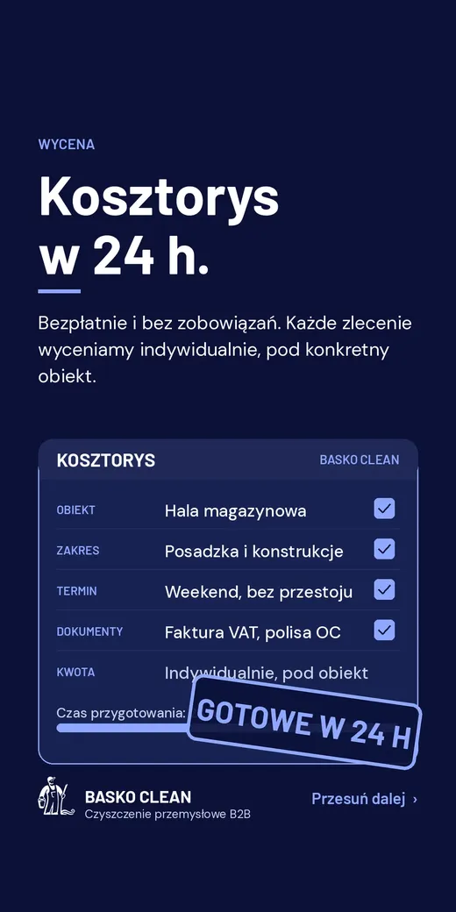